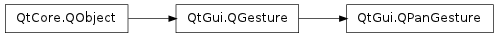
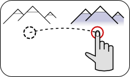

QPanGesture ¶

Note
This class was introduced in Qt 4.6
Synopsis ¶
Functions ¶
- def acceleration ()
- def delta ()
- def lastOffset ()
- def offset ()
- def setAcceleration (value)
- def setLastOffset (value)
- def setOffset (value)
Detailed Description ¶
The PySide.QtGui.QPanGesture class describes a panning gesture made by the user.
For an overview of gesture handling in Qt and information on using gestures in your applications, see the Gestures Programming document.
- class PySide.QtGui. QPanGesture ( [ parent=None ] ) ¶
-
Parameters: parent – PySide.QtCore.QObject
- PySide.QtGui.QPanGesture. acceleration ( ) ¶
-
Return type: PySide.QtCore.qreal This property holds the acceleration in the motion of the touch point for this gesture.
- PySide.QtGui.QPanGesture. delta ( ) ¶
-
Return type: PySide.QtCore.QPointF This property holds the offset from the previous input position to the current input.
This is essentially the same as the difference between PySide.QtGui.QPanGesture.offset() and PySide.QtGui.QPanGesture.lastOffset() .
- PySide.QtGui.QPanGesture. lastOffset ( ) ¶
-
Return type: PySide.QtCore.QPointF This property holds the last offset recorded for this gesture.
The last offset contains the change in position of the user’s input as reported in the PySide.QtGui.QPanGesture.offset() property when a previous gesture event was delivered for this gesture.
If no previous event was delivered with information about this gesture (i.e., this gesture object contains information about the first movement in the gesture) then this property contains a zero size.
- PySide.QtGui.QPanGesture. offset ( ) ¶
-
Return type: PySide.QtCore.QPointF This property holds the total offset from the first input position to the current input position.
The offset measures the total change in position of the user’s input covered by the gesture on the input device.
- PySide.QtGui.QPanGesture. setAcceleration ( value ) ¶
-
Parameters: value – PySide.QtCore.qreal This property holds the acceleration in the motion of the touch point for this gesture.
- PySide.QtGui.QPanGesture. setLastOffset ( value ) ¶
-
Parameters: value – PySide.QtCore.QPointF This property holds the last offset recorded for this gesture.
The last offset contains the change in position of the user’s input as reported in the PySide.QtGui.QPanGesture.offset() property when a previous gesture event was delivered for this gesture.
If no previous event was delivered with information about this gesture (i.e., this gesture object contains information about the first movement in the gesture) then this property contains a zero size.
- PySide.QtGui.QPanGesture. setOffset ( value ) ¶
-
Parameters: value – PySide.QtCore.QPointF This property holds the total offset from the first input position to the current input position.
The offset measures the total change in position of the user’s input covered by the gesture on the input device.